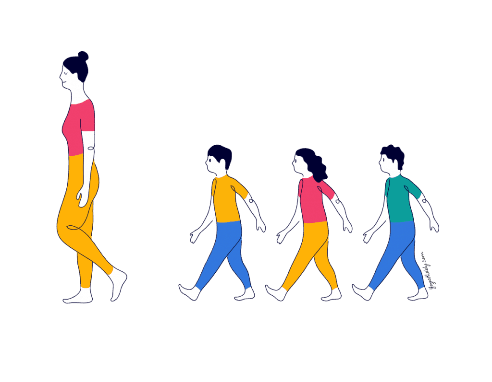
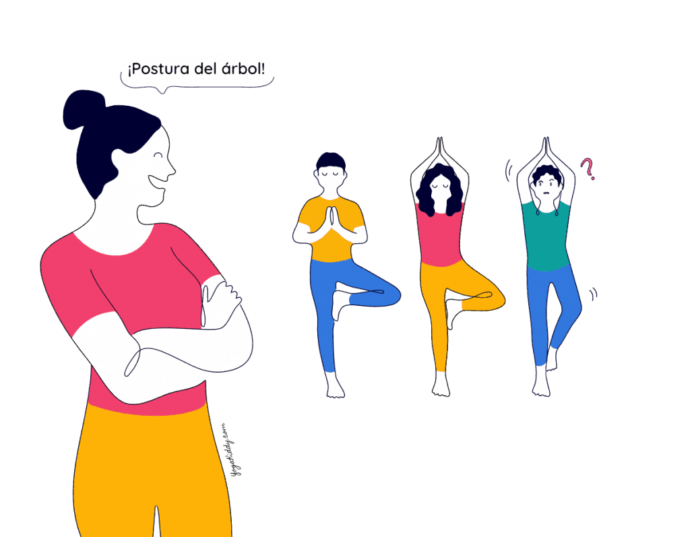

Desde muy temprana edad, el yoga puede ayudar a desarrollar las funciones psicomotoras de los niños, lo que se traduce en un mejor crecimiento y desarrollo para ellos. Una forma de fomentar el aprendizaje del yoga y de entretener a los niños a partes iguales es usar diferentes juegos de yoga para niños, de ésta manera se divertirán aprendiendo.
Carrera por el yoga
Aunque parezca contradictorio, en esta carrera no se corre: se camina. Carrera por el yoga usa los principios de otros juegos, como congelados, y los ejecuta de una forma diferente pero entretenida.
¿En qué consiste este divertido juego? Te lo explico a continuación
¿Qué se necesita para jugar?
Un espacio de al menos 10 metros de largo.
Conocimiento previo de los nombres de las poses de yoga.
Tiempo recomendado
1-2 rondas por cada niño, máximo 20 rondas.
Beneficios
- Agiliza la memoria y la velocidad de reacción.
- Mejora la velocidad de reacción de los niños.
- Fortalece el aprendizaje de los nombre de las poses.
- Ayudar a desarrollar el autocontrol y el seguimiento de órdenes.
Instrucciones
La persona encargada se ubica en uno de los extremos de la habitación o espacio disponible para el juego, y los niños deben ubicarse todos al otro extremo, en una fila.
El instructor entonces debe dar la espalda a los niños, quienes deberán comenzar a caminar hacia en dirección hacia él evitando correr. Una vez comenzado el juego el instructor se debe voltear repentinamente y gritar una pose de yoga, la cual los niños deben realizar y quedarse inmóviles. Una vez pasados 5-10 segundos, el instructor regresa a la posición inicial y los niños retoman su caminata.
El primer niño que logre tocar al instructor lo suplanta en sus labores de dirección de la clase. De ésta manera, se fomenta en los niños la sana competitividad, el liderazgo y el control sobre su cuerpo.